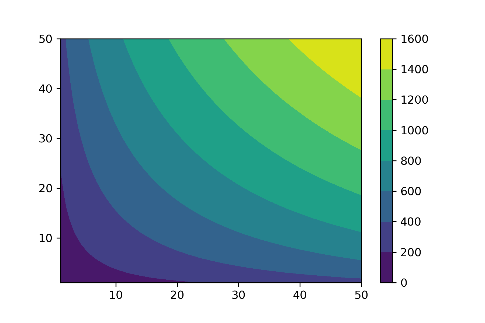

Consommateur¶
Les fondements de la microéconomie débutent avec le comportement du consommateur. On veut prédire ce que ferait un consommateur dans une situation donnée. On veut faire du sens des comportements observés. La théorie paraîtra simpliste, mais de ces fondements, on sera capable d’assez bien prédire le comportement économique des consommateurs. Des raffinements existent, certains ont même révisé les fondements pour y introduire une approche comportementale où les individus ont des biais, répondent aux émotions, à des limites cognitives, etc.
{kind=link}
Préférences¶
Préférences définies sur des paniers de biens et services
Panier: vecteur de quantités \(x = (x_1, x_2,\cdots,x_n)\).
Pour deux paniers \(A\) and \(B\), préférences dictent lequel est préféré
Préférences sont comme des listes de souhaits (hiérarchisée): on ignore les prix et les ressources.
Les relations de préférences sont dénotées par \(\succ,\succeq,\sim\).
Hypothèses importantes sur les préférences
Des hypothèses ou axiomes sont nécessaires pour en arriver à une théorie du comportement du consommateur. On note les plus importantes:
Exhaustive
Pour tous paniers A et B soit le consommateur:
préfère toujours A à B (\(A\succ B\))
préfère toujours B à A (\(B\succ A\))
est indifférent entre A et B (\(A \sim B\))
Est-ce restrictif?
Oui, e.g.: crème glacée vs. soupe (on préfère la crème glacée en été, mais la soupe en hiver).
Mais on peut s’en sortir: inclure les circonstances dans les paniers (la saison)
Les paniers sont alors (crème glacée, chaleur), (crème glacée, froid), (soupe, chaleur), (soupe, froid). La relation de préférence est alors stable et exhaustive.
Transitivité
Une question de cohérence…
Si trois paniers A, B, C tels que \(A\succ B\), \(B \succ C\), alors le consommateur préfère A à C (\(A \succ C\)).
Cette hypothèse paraît logique. Mais elle n’est pas toujours vérifiée… Surtout en présence d’incertitude. Nous la garderons quand même.
Non-satiation
Si A contient au moins autant que le panier B, strictement plus d’au moins un bien dans le panier, alors \(A \succ B\).
Version faible (\(A \succeq B\),indifférence ou préférence) est raisonnable
Étiquette des biens: les biens sont désirables (qualité air au lieu de pollution).
Il est peu pratique de fonctionner avec des listes de préférences pour modéliser les comportements. Par exemple, comment prédire l’effet d’un changement de prix avec une liste de préférence? On voudra se rapprocher de l’analyse marginale pour rendre ceci plus pratique.
Par ailleurs, les préférences sont très différentes d’une personne à l’autre (et d’un pays à l’autre). Falk et co-auteurs (2018) ont analysé les préférences dans 76 pays dans un nombre de domaines.
Courbes d’indifférence et TMS¶
Le premier outil est celui des courbes d’indifférence dans un espace réel (quantités de plusieurs biens).
Deux biens \(X,Y\):
Pour tout panier \((X_0,Y_0)\), combinaisons \((X,Y)\) telles que le consommateur est indifférent entre \((X,Y)\) et \((X_0,Y_0)\)
Courbe indifférence vers le haut indique niveau utilité plus élevé (non-satiation)
Les courbes d’indifférence ne se croisent pas si elles respectent la transitivité.
{kind=link}
Exercice A: Montrez que des courbes d’indifférence qui se croisent ne respectent pas la transitivité.
Taux marginal de substitution (TMS)
Ces courbes d’indifférences contiennent plus d’information qu’on croit …
Pour un panier \((X_0, Y_0)\), TMS de \(X\) en fonction de \(Y\): Quantité du bien \(Y\) que le consommateur est prêt à sacrifier pour avoir une unité de plus de \(X\).
Valeur que le consommateur porte sur un bien \(X\) en terme d’unités d’un autre bien \(Y\).
Correspond à la pente de la courbe d’indifférence à \((X_0,Y_0)\).
Convexité des courbes d’indifférences
Si la quantité de nourriture (\(X\)) augmente, comment le TMS de \(X\) en fonction de \(Y\) change?
Il diminue généralement. Ceci est représenté par des courbes d’indifférences convexes. Même s’il y a non-satiation, on accepte généralement que l’intensité de la préférence associée à une unité additionnelle soit plus faible avec le nombre d’unités consommées.
Utilité¶
Les courbes d’indifférence nous permettent de passer vers une représentation des préférences par une fonction. Sur la courbe d’indifférence, chacun des paniers procure le même bien-être. Nous pouvons lui attribuer une valeur ou utilité (arbitraire). En sautant d’une courbe d’indifférence à une autre (plus élevée), on augmente l’utilité. Donc, on peut construire une fonction \(U(X,Y)\) qui représente ces préférences. La valeur de cette fonction est donc ordinale (elle permet de classer les paniers en ordre de préférence). Ce n’est que l’ordre qui compte.
Fonction d’utilité: assigne un nombre à chaque panier
\(U\) représente les préférences si et seulement si \(A \succ B \Rightarrow U(A) > U(B)\) et \(U(A) > U(B) \Rightarrow A \succ B\)
Les préférences sont ordinales (hiérarchiques)
Si \(f\) est une fonction strictement croissante et \(U\) représente des préférences, alors \(V(X) = f(U(X))\) représente les mêmes préférences.
\[U(X) > U(Y) \iff f(U(X)) > f(U(Y))\]La valeur de l’utilité n’a pas de signification, l’ordonnancement des paniers est important.
Exemple: \(U(X,Y) = \log X + \log Y\) et \(V(X,Y) = XY\) représente les mêmes préférences
Exercice B: Montrez que \(U\) et \(V\) dans l’exemple ont les mêmes préférences en trouvant la transformation \(V=f(U)\).
Comment trouver le TMS à partir de l’utilité?
Deux biens \(X\), \(Y\). Préférences représentées par la fonction d’utilité \(U(X,Y)\)
e.g. \(U(X,Y) = \log X + \log Y\)
TMS de \(X\) en fonction de \(Y\)
Combien de \(Y\) sacrifier pour davantage de \(X\)
Formellement: augmente \(X\) de \(\Delta X\): quel est le changement \(\Delta Y\) qui conserve l’indifférence?
Calculer le TMS de \(X\) en fonction de \(Y\)
On doit avoir \(\Delta Y\) tel que \(U(X + \Delta X, Y + \Delta Y) = U(X,Y)\)
Approximation de premier ordre:
\[U(X+\Delta X, Y+ \Delta Y) \simeq U(X,Y)+ \Delta X \frac{\partial U}{\partial X} + \Delta Y \frac{\partial U}{\partial Y}\]\[\Rightarrow \;\; TMS = \Delta Y/ \Delta X = -\frac{\partial U}{\partial X}/ \frac{\partial U}{\partial Y}\]
On réfère à \(\frac{\partial U}{\partial X}\) comme étant l’utilité marginale de \(X\) (et vice-versa pour \(Y\)). L’utilité marginale est généralement décroissante, mais positive (attention: l’utilité n’est pas décroissante, seule l’utilité marginale).
Exemple:
\(U(X,Y) = \log X + \log Y\)
\[TMS = -\frac{\partial U}{\partial X}/ \frac{\partial U}{\partial Y} = -Y/X\]
Prenons la différentielle totale:
Posons \(dU = 0\), alors
On peut utiliser SymPy pour trouver le TMS:
import simpy as sp
x,y,a = sp.symbols('x y a')
u = x**a * y**(1-a)
umx = diff(u,x)
umy = diff(u,y)
tms = umx/umy
Contrainte budgétaire¶
Jusqu’ici, le consommateur a tous les paniers devant lui et a des préférences sur ceux-ci. Il peut tout avoir! En pratique, Il pourra acheter les biens, mais à un prix. Et ce prix est important parce qu’il a une richesse limitée pour consommer. Tout achat a un coût d’opportunité.
On ne peut pas dépenser davantage que notre richesse \(I\)
- Deux biens \(X\), \(Y\): Contrainte: \(p_X X + p_Y Y \leq I\). Cette contrainte donne ce qui est abordable étant donné \(I\)
- En posant l’égalité, on peut résoudre pour \(Y\) en termes de \(X\): \(Y = \frac{I - p_X X}{p_Y}\)Le prix relatif entre \(X\) et \(Y\) en respectant la contrainte est:\[\frac{dY}{dX} = -\frac{p_X}{p_Y}\]
Acheter une unité de \(X\) implique un sacrifice de \(\frac{p_X}{p_Y}\) unités de \(Y\). C’est le coût d’opportunité de \(X\) en termes de \(Y\).

Dans l’espace \((X,Y)\), la contrainte définie les allocations possibles. Celles au dessus ne sont pas possibles. Seules celles entre l’origine est la contrainte sont possibles…¶
Normalisation
Contrainte budgétaire demeure la même si prix et richesse multipliés par même constante \(\lambda\).
On peut acheter les mêmes biens.
Normalisons \(p_Y = 1\). Alors \(Y = I - p_X X\). \(p_X\) est maintenant en termes de quantité de \(Y\) (numéraire) et idem pour \(I\).
Seuls les prix relatifs affectent l’allocation.
Exercice C: Montrez qu’une contrainte budgétaire ne change pas si on multiplie prix et revenu par \(\lambda>0\).
Choix du consommateur¶
La contrainte est fixe. Le consommateur peut choisir la courbe d’indifférence sur laquelle il sera, et donc quelle combinaison il consommera étant donné la contrainte. Quel est le plus haut niveau d’utilité qu’il peut atteindre sur la contrainte?
On ne peut pas aller sur une courbe d’indifférence plus élevée que la contrainte
Toutes les courbes plus basses sont sous-optimales.
La courbe d’indifférence qui touche la contrainte (souvent tangente) donne le meilleur niveau de bien-être possible
{kind=link}
Les points A, C et D sont possibles étant donné la contrainte. Donc, le point B peut être éliminé même si le TMS (pente au point B) semble très près du rapport du prix. Le point D peut être éliminé parce que le consommateur ne consomme pas tout son budget. Il peut donc aller sur une autre courbe d’indifférence en augmentant sa consommation des deux biens. Les allocations A et C dépensent tout le budget. Mais C n’est pas optimal. En valeur absolue, le TMS est plus élevé que le coût d’opportunité de consommer une unité de X additionnel. Donc, on peut augmenter X et réduire Y tout en augmentant l’utilité. Le point A est optimal, le TMS est égal au rapport de prix.¶
Approche Directe
Le problème est
Maximiser \(U(X,Y)\) étant donné la contrainte \(p_X X+ p_YY = I\)
Étape 1: Substituer la contrainte
Si achète \(X\) alors on consomme \(Y(X) = \frac{I - p_X X}{p_Y}\)
Utilité seulement fonction de \(X\): \(V(X) = U(X,Y(X))\)
Étape 2: Maximiser sans contrainte
Prendre condition de premier ordre (CPO)
La CPO:
\[\frac{dV}{dX} = 0 \iff \frac{dU}{dX} + \frac{dY}{dX}\frac{dU}{dY} = 0\]\[\iff \frac{dU}{dX}\Bigg/\frac{dU}{dY} = \frac{p_X}{p_Y}\]
-TMS sur la courbe d’indifférence = Pente de la contrainte budgétaire
On peut faire ce travail par SymPy:
import sympy as sp
x,y,a, p_x, p_y, I = sp.symbols('x y a p_x p_y I')
u = x**a * y**(1-a)
budget = sp.Eq(p_x*x + p_y*y,I)
yx = sp.solve(budget,y)[0]
ux = u.subs(y,yx)
cpo = sp.Eq(sp.diff(ux,x),0)
xstar = sp.solve(cpo,x)[0]
Exercice D: Trouvez les demandes pour \(u(x,y) = XY\) sous la contrainte \(p_X X + p_Y Y \le I\).
On peut poser le lagrangien:
Si on maximise: \(\max_{X,Y,\lambda} L(X,Y,\lambda)\), les CPO sont
En prenant le ratio des deux premières CPO, on a:
Exercice E: Trouvez les demandes pour \(u(X,Y) = XY\) comme précédement mais par le lagrangien.
Les demandes \(X^*(p_X,p_Y,I)\) et \(Y^*(p_X,p_Y,I)\) sont appelées demandes marshalliennes (Alfred Marshall). Nous étudierons leurs propriétés dans le prochain cours. Elles seront très utiles pour étudier le comportement et les politiques publiques (e.g. taxation). Ces demandes sont observables, contrairement à l’utilité. On apprendra sur l’utilité par ces demandes.
Utilité Indirecte¶
L’utilité indirecte \(V(p_X,p_Y,I)\) est le niveau d’utilité maximale atteint avec les prix \((p_X,p_Y)\) et le revenu \(I\),
Exercice F : Montrez que \(\frac{\partial V}{\partial I} = \lambda\) où \(V\) est l’utilité indirecte.
Identité de Roy¶
Si l’utilité indirecte est donnée par \(V(p_X,p_Y,I)\) alors on peut retrouver les demandes par l’identité de Roy:
Exercice G: Montrez que ceci est vrai en utilisant le théorème de l’enveloppe.
Exemple Consommateur¶
Voir ce notebook pour un bel exemple qui utilise Python pour résoudre le problème du consommateur avec fonction d’utilité CES (Constant Elasticity of Substitution)